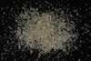

|
|
(For further information on spectroscopy, see:
http://speclab.cr.usgs.gov)
TITLE: Cookeite CAr-1 DESCRIPT
DOCUMENTATION_FORMAT: MINERAL
SAMPLE_ID: SC-CAr-1
MINERAL_TYPE: Phyllosilicate
MINERAL: Cookeite (Chlorite group)
FORMULA: LiAl4(Si3Al)O10(OH)8
FORMULA_HTML: LiAl4(Si3Al)O10(OH)8
COLLECTION_LOCALITY: N. Little Rock, ARK
ORIGINAL_DONOR: Clay Mineral Society, Source Clay Repository
CURRENT_SAMPLE_LOCATION: USGS Denver Spectroscopy Laboratory
ULTIMATE_SAMPLE_LOCATION: USGS Denver Spectroscopy Laboratory
SAMPLE_DESCRIPTION:
Sample was ground in an alumina mortar and pestle and wet sieved with methanol into less than 30µm (c), 30-45µm, 60-104µm (b), and 104-150µm (a) size fractions. (Letter denotes spectrum designation.)
King, T.V.V. and R.N. Clark, 1989, Spectral Characteristics of Chlorites and Mg-Serpentines Using high-Resolution Reflectance Spectroscopy. Jour. Geophys. Res., 13.997-14,008.
IMAGE_OF_SAMPLE:

END_SAMPLE_DESCRIPTION.
XRD_ANALYSIS:
Sample is cookeite plus medium amount of calcite. The sample is spectrally pure. XRD analysis by Norma Vergo.
Clark, R.N., T.V.V. King, M. Klejwa, G. Swayze, and N. Vergo, 1990,
High spectral resolution reflectance spectroscopy of minerals:
J. Geophys Res.
12653-12680.
END_XRD_ANALYSIS.
COMPOSITIONAL_ANALYSIS_TYPE: None # XRF, EM(WDS), ICP(Trace), WChem COMPOSITION_TRACE: None
COMPOSITION_DISCUSSION:
None
END_COMPOSITION_DISCUSSION.
MICROSCOPIC_EXAMINATION:
Up to 2 vol% quartz impurity, cookeite has low relief, first order gray color, biaxial (+), no calcite observed in x-polarized light. No fizz with HCl, so calcite identification by XRD appears to be in error. Suggest new XRD analysis.
All properties are consistent with chlorite. G. Swayze.
END_MICROSCOPIC_EXAMINATION.
SPECTROSCOPIC_DISCUSSION:
END_SPECTROSCOPIC_DISCUSSION.
SPECTRAL_PURITY: 1b2b3b4_ # 1= 0.2-3, 2= 1.5-6, 3= 6-25, 4= 20-150 microns
SPECTRAL_PURITY: 1b2c3c4_ # <30um # 1= 0.2-3, 2= 1.5-6, 3= 6-25, 4= 20-150 microns
| LIB_SPECTRA_HED: | where | Wave Range | Av_Rs_Pwr | Comment |
|---|---|---|---|---|
| LIB_SPECTRA: | splib04a r 1206 | 0.2-2.7µm | 200 | g.s.= 115µm |
| LIB_SPECTRA: | splib04a r 1217 | 0.2-2.7µm | 200 | g.s.= 70µm |
| LIB_SPECTRA: | splib04a r 1228 | 0.2-2.7µm | 200 | g.s.= 15µm |
| LIB_SPECTRA: | splib05a r 2126 | 0.2-2.7µm | 200 | g.s.= 115µm |
| LIB_SPECTRA: | splib05a r 2138 | 0.2-2.7µm | 200 | g.s.= 70µm |
| LIB_SPECTRA: | splib05a r 2150 | 1.3-5.3µm | 200 | g.s.= 15µm |
| LIB_SPECTRA: | splib05a r 2189 | 0.2-2.7µm | 200 | g.s.= |
| LIB_SPECTRA: | splib06a r 6074 | g.s.= | ||
| LIB_SPECTRA: | splib06a r 6087 | g.s.= | ||
| LIB_SPECTRA: | splib06a r 6131 | g.s.= | ||
| LIB_SPECTRA: | splib06a r 6144 | g.s.= | ||
| LIB_SPECTRA: | splib06a r 6184 | g.s.= | ||
| LIB_SPECTRA: | splib06a r 6228 | g.s.= | ||
| LIB_SPECTRA: | splib06a r 6241 | g.s.= |
{kind=link}